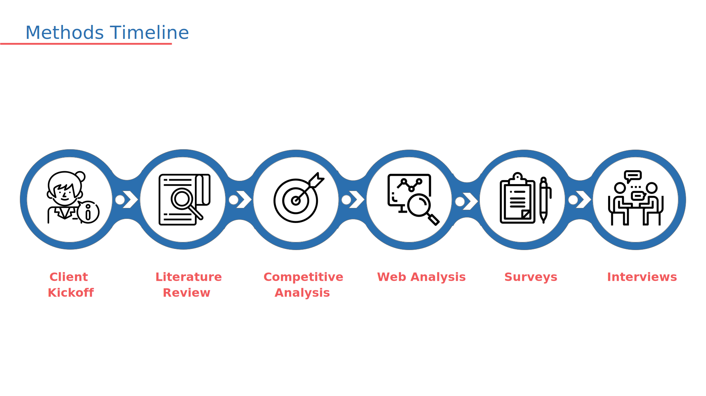

TxDOT Digital Newsroom
Collaboration with the Texas Department of Transportation (TxDOT)
Problem space:
TxDOT wants to build their own digital newsroom, as they believe local media are not passing on enough positive takes regarding their brand. The goal of the digital newsroom is to raise brand awareness and create contents that attracts Texans to their website. However, they are not sure where to start. Thus, this report gives recommendations regarding the groundwork that is to be done before starting a digital newsroom.
My Role: UX Researcher
Duration: 3 months
Below is a summary of the report.
Full Report
From client kickoff, I wanted to learn the objective of TxDOT.

From literature review, I wanted to gain insight to how people consume information, what ways to engage users, and how to raise brand awareness.

From competitive analysis, my objective is to uncover potential factors that might have contributed to other successful newsrooms.


Conducting web analysis helped me gain insight to how users are currently using TxDOT's website.

By conducting a survey, I wanted to learn about the target audience of TxDOT, what devices they use, what information they consume and where they seek those information.


By conducting an interview, I wanted to gain in depth information regarding drivers' driving habits, perception of TxDOT, and the information they look for before driving.


As seen from the web analytics, users are exiting the TxDOT website frequently, thus I conducted a usability testing to find out the cause of it.


Based on literature review, competitive analysis, web analysis, survey, interviews, and usability testing, I made recommendations for TxDOT to consider before building a digital newsroom.